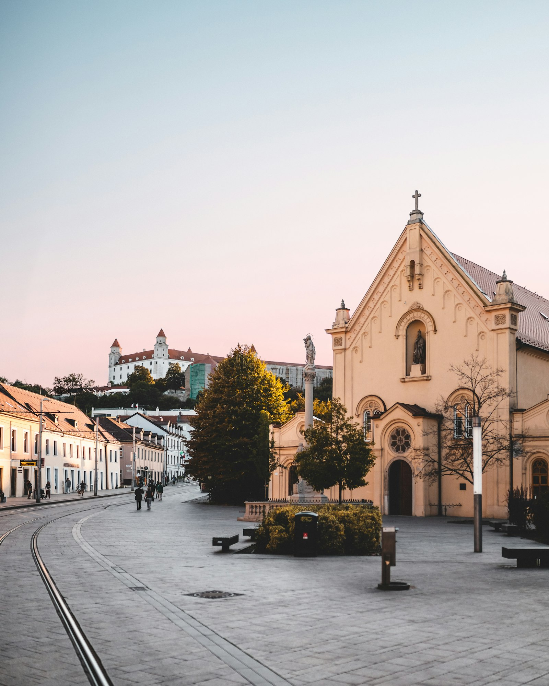
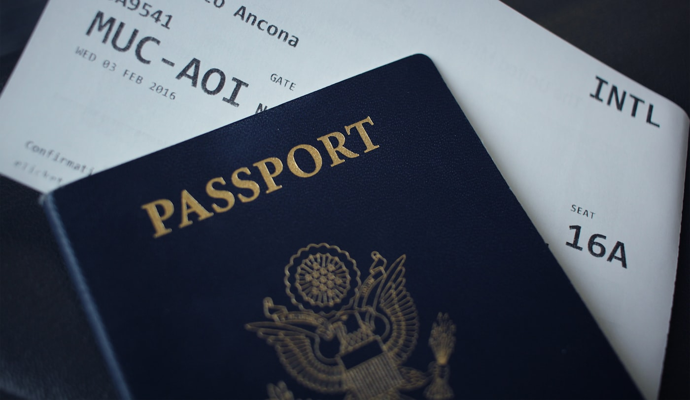

Поможем легально получить вид на жительство и довести дело до постоянного проживания. Подберём основание под вашу ситуацию, подготовим документы и пройдём с вами весь путь - от подачи до карты резидента.

Вид на жительство на основании работы или предпринимательства. Подскажем, какой вариант подходит именно вам и что для него нужно.
ВНЖ для супругов и детей того, кто уже живёт в Словакии. Поможем собрать и правильно оформить документы.
Вовремя продлим действующий вид на жительство, чтобы не было просрочек и лишних рисков для статуса.
Переход к постоянному проживанию - следующий шаг после нескольких лет жизни в стране. Подскажем условия и сроки.
Вы всегда знаете, что происходит сейчас и что будет дальше. Сроки и стоимость обсуждаем заранее.
Разбираем вашу ситуацию и подбираем подходящее основание для ВНЖ.
Даём точный список, помогаем всё подготовить и проверяем перед подачей.
Сопровождаем подачу в нужное ведомство и контролируем сроки рассмотрения.
Получаете ВНЖ. Дальше помогаем с жизнью на месте, если нужно.
